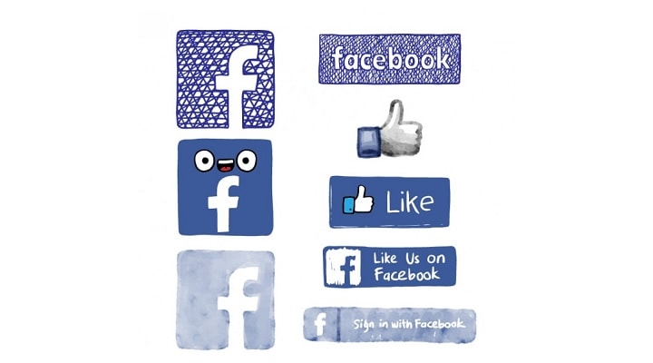

Mida sus resultados en redes sociales con estas herramientas
Los “me gusta” o likes que reciben las publicaciones de su empresa en Facebook pueden darle una satisfacción inicial e inmediata, de la misma forma que un selfie le encanta a los usuarios. Empero si lo que busca es vender, deberá recurrir a otras herramientas que le permitirán ver los resultados reales de sus esfuerzos de mercadeo digital. Algunas de estas herramientas –como Topic Data de Facebook– también serán muy útiles para la planificación de las campañas.
Cómo tener éxito con tu estrategia de marketing online
Actualmente, es necesario disponer de una buena estrategia de marketing online para que sea posible conseguir un gran número de clientes potenciales. Por ese motivo, es necesario que sepas cómo tener éxito con tu estrategia de marketing online. Para esto no pierdas de vista los siguientes elementos...
Marketing Digital: Facebook mejora su marketing digital y aumenta sus ingresos. ¿cómo lo está consiguiendo?

Facebook no permitirá el bloqueo de anuncios de ‘ad blockers’ en su página. La decisión del grande en las redes sociales, repercutirá sobre los expertos en marketing digital, que usan con frecuencia este medio. Mark Zuckerberg el creador de la red social, indicó que uno de los principales motivos de esta decisión, es que miles de usuarios hacen trampa en sus negocios, porque emplean extensiones para sus navegadores que bloquean los anuncios. El acontecimiento también se dio, porque la red social más famosa vive de la publicidad.